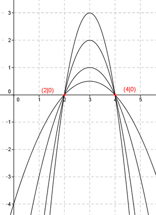

Aufgabe 7 Alle Graphen einer ganzrationalen Funktion 2. Grades gehen durch die Punkte A(2|0) und B(4|0) und haben an der Stelle x = 3 ein Maximum. Wie lautet die Funktionsgleichung dieser Kurvenschar? Allgemeine Form einer ganzrationalen Funktion 2. Grades: f(x) = ax² + bx + c f’(x) = 2ax + b f’’(x) = 2a 3 Bedingungen nötig - nur 2 Bedingungen gegeben --> keine eindeutige Funktionsgleichung --> es gibt eine Kurven- oder Graphenschar 1. Geht durch den Punkt (2|0) bedeutet: f(2) = 0 --> a * 2² + b * 2 + c = 0 --> 4a + 2b + c = 0 I 2. Geht durch den Punkt (4|0) bedeutet: f(4) = 0 --> a * 4² + b * 4 + c = 0 --> 16a + 4b + c = 0 II 3. Haben an der Stelle x = 3 ein Maximum bedeutet: die Parabel ist nach unten geöffnet, und a muss negativ sein. f’(3) = 0 --> 2a * (3) + b = 0 --> 6a + b = 0 III I * (-1) + II -4a - 2b - c = 0 16a + 4b + c = 0 ------------------ 12a + 2b = 0 IV III * (-2) + IV -12a - 2b = 0 12a + 2b = 0 ------------- 0 = 0 --> Lineare Abhängigkeit zwischen III und IV. 12a + 2b = 0 |-12a 2b = -12a |:2 b = -6a b = -6a in I eingesetzt: 4a - 2 * (-6a) + c = 0 4a - 12a + c = 0 - 8a + c = 0 |+8a c = 8a Gesuchte Funktionsgleichung: f(x) = ax2 - 6ax + 8a a < 0 Darstellung für 4 verschiedene a. Vom Scheitelpunkt aus von oben nach unten: a1 = -3 a2 = -2 a3 = -1 a4 = -0,5 